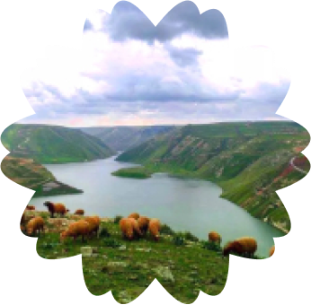

I was born in Daraa, Syria in 1989.
This city is in the south of Syria near the border of Jordan.
I lived there with my parents, two sisters, Nawar and Laila, and my brother Ayham.
At university I studied Arabic Literature and also I took a vocational course in Marketing.

Diana's story
I am Diana, 47 years old from Damascus, Syria. In Syria,
I was an interior designer and an art teacher at Damascus University. Besides those two jobs,
I was also working as the director of the Women’s Art Institute, that teaches design and craft skills.